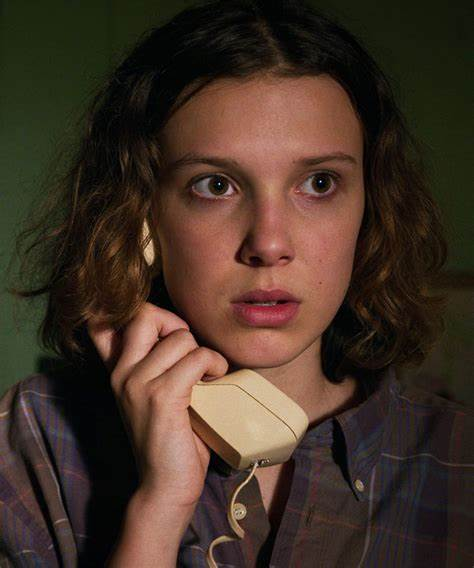

Primeira temporada (2016)
Passada em 1983, a primeira temporada de Stranger Things introduz Eleven, uma garota com poderes psicocinéticos que escapa de um laboratório ao mesmo tempo que um monstro do Mundo Invertido rapta Will. A garota acaba se juntando aos amigos de Will para o ajudar a voltar a sua dimensão.
Segunda temporada (2017)
No Halloween de 1984, um dos monstros principais do Mundo Invertido ameaça aterrorizar os cidadãos de Hawkins. O grupo de amigos se junta então para impedir que isso aconteça, mas Will parece ainda estar sofrendo com as consequências de sua experiência no Mundo Invertido. Mas o que aconteceu com Eleven após os acontecimentos finais da primeira temporada? Eles poderão contar com ela ou a menina desapareceu para sempre?
Terceira temporada (2019)
É 1985 em Hawkins, Indiana, e está cada vez mais quente. O período escolar acabou, há um novo shopping na cidade e romances florescem. Mas novos perigos surgem. O mal não termina, evolui; e um verão pode mudar tudo.
Quarta temporada (2022)
Seis meses depois da batalha de Starcourt, que deixou um rastro de terror e destruição em Hawkins, o grupo de amigos se separa pela primeira vez, enquanto passam por um período turbulento na escola, o que dificulta ainda mais as coisas. Nesse momento vulnerável, surge uma ameaça sobrenatural ainda mais terrível, trazendo um grande mistério que pode ser a chave para acabar com os horrores do Mundo Invertido.
PERSONAGENS PRINCIPAIS
